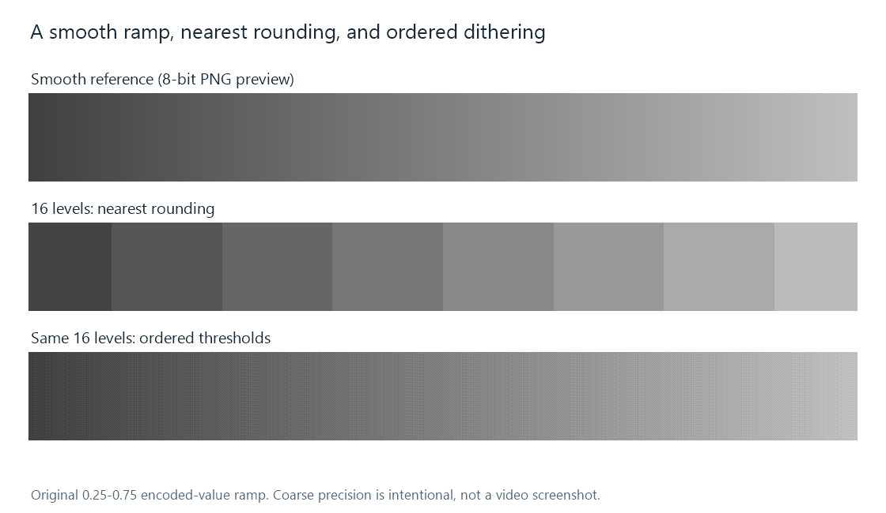

Color Banding
Color banding occurs when a smooth change in picture values is represented by visible plateaus and transitions.
A sky fades gradually from one shade to another, but the video shows broad ribbons with visible boundaries. Those ribbons are color banding: neighboring regions share the same or very similar reconstructed values, separated by abrupt changes that were not apparent in the intended smooth gradient.

The middle strip deliberately uses only 16 levels to make the plateaus easy to see. This is an original arithmetic illustration, not a claim about the precision of a particular video.
How a gentle ramp becomes a plateau
Imagine a high-precision signal that increases gradually from 100.1 to 100.4 when expressed in the destination's code units. Nearest rounding sends every one of those values to code 100. Their small differences disappear.
As the signal reaches 100.5, rounding can switch to 101. If the original gradient crossed that threshold over a large, otherwise uniform area, a narrow numerical step now outlines a broad region. The absence of texture helps the eye notice it.
The process can repeat across a sky, an animated background, or a wall under soft lighting. Higher bit depth provides smaller destination steps. Dithering changes how neighboring positions choose between steps, breaking up the common boundary.
More than one stage can create the steps
| Stage | How the gradient can change | Useful comparison |
|---|---|---|
| Source preparation or prior encoding | Fine variations have already been rounded or discarded | Inspect a decoded original frame |
| Lossy video encoding | Coarse reconstruction of transform corrections can flatten subtle variation | Compare the encoder input with its decoded output |
| Tone, color, or precision conversion | A smooth calculated result is rounded into fewer usable values | Compare values before and after the conversion |
| Final rendering or display processing | The delivered picture is reduced or processed further | Compare the same output through another rendering path |
The coded sample depth establishes an available value grid. It does not require an encoder to preserve every subtle difference on that grid. A 10-bit stream can still contain flat regions produced by an earlier low-precision stage or by its compression decisions.
This distinction helps interpret an Emby session that looks smooth during original playback but develops bands during conversion. The comparison should use the same passage and a similar presentation size. A higher output bitrate can help when the encoder is discarding gradient detail; a precision-conversion problem needs attention to the relevant output grid and rounding.
The shape of the defect is useful evidence
Bands tend to track contours of similar tone or color. Compression blocks tend to reveal the boundaries of a coding structure; ringing tends to appear beside an edge. A picture can contain several of these together, but locating the smooth region and its contour-shaped steps makes the banding question more specific.
Pause on the same source frame and inspect it without repeatedly saving it through lossy image formats. A screenshot also represents the screenshot path's precision and color conversion, so it is evidence about that captured result. Comparing the decoded samples themselves can distinguish stored plateaus from a rendering effect.
What an already banded source can yield
Once many distinct inputs have collapsed to one code, a later stage cannot know their exact former values. A debanding operation can estimate a smooth surface from nearby samples; it changes the image according to that estimate. It can also soften genuine low-contrast texture if the two are difficult to distinguish.
The clearest improvements happen before the unwanted collapse: preserve suitable working precision, control the encoder's reconstruction loss, and make the final precision reduction deliberately. This treats the point where the plateaus arise, rather than expecting a larger output file to recreate variation that is already gone.